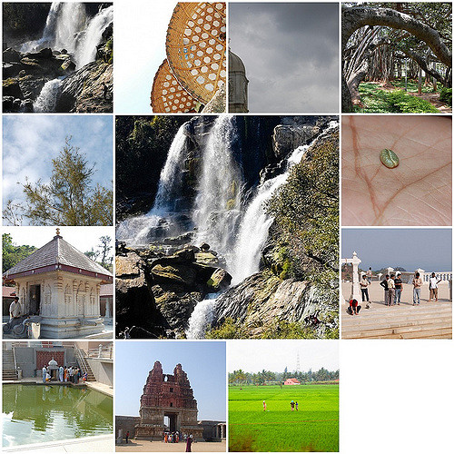

Karnataka
Description of the state
- Karnataka is a state in the south western region of India.
- It was formed on 1 November 1956, with the passage of the States Reorganisation Act.
- Originally known as the State of Mysore, it was renamed Karnataka in 1973.
- The state corresponds to the Carnatic region.
- The capital and largest city is Bangalore (Bengaluru).
- Karnataka is bordered by the Arabian Sea to the west, Goa to the northwest, Maharashtra to the north, Telangana to the northeast, Andhra Pradesh to the east, Tamil Nadu to the southeast, and Kerala to the south.
- The state covers an area of 191,976 square kilometres (74,122 sq mi), or 5.83 percent of the total geographical area of India.
- It is the seventh largest Indian state by area. With 61,130,704 inhabitants at the 2011 census, Karnataka is the eighth largest state by population, comprising 30 districts.
- Kannada, one of the classical languages of India, is the most widely spoken and official language of the state alongside Konkani, Marathi, Tulu, Tamil, Telugu, Malayalam, Kodava and Beary. Karnataka also has the only 3 naturally Sanskrit-speaking districts in India.
- The two main river systems of the state are the Krishna and its tributaries, the Bhima, Ghataprabha, Vedavathi, Malaprabha, and Tungabhadra in North Karnataka Sharavathi in Shivamogga , and the Kaveri and its tributaries, the Hemavati, Shimsha, Arkavati, Lakshmana Thirtha and Kabini, in the south. Most of these rivers flow out of Karnataka eastward, reaching the sea at the Bay of Bengal.